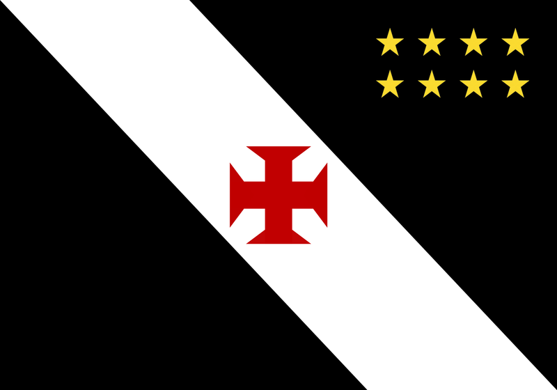

Títulos Nacionais

Campeonato Brasileiro (Série A)
Copa do Brasil
2011
Supercopa do Brasil
2020
Copa dos Campeões
2000
Taça Rio (Torneio Estadual, parte do Campeonato Carioca)
2019
Títulos Internacionais
Copa Libertadores da América
1998
Copa Mercosul
2000
Copa Sudamericana
2008
Recopa Sudamericana
1999
Copa Rio Internacional
1951
Títulos Estaduais (Campeonato Carioca)
Campeonato Carioca
- 1923
- 1924
- 1929
- 1934
- 1936
- 1939
- 1945
- 1947
- 1950
- 1952
- 1956
- 1958
- 1965
- 1970
- 1974
- 1982
- 1987
- 1992
- 1993
- 1994
- 1998
- 2003
- 2015
Títulos menores
Além desses títulos, o Vasco também conquistou diversos outros troféus importantes, como a
Copa Rio de
1951 (considerada por alguns como um precursor de competições internacionais), torneios amistosos e
títulos de outras competições nacionais e internacionais, especialmente no futebol de base.